The BPM module for Odoo ERP provides a comprehensive solution for organizing and managing workflows through BPMN
(Business Process Model and Notation) diagrams. This module empowers businesses to design, visualize, and
optimize their processes with ease, ensuring that every step in a workflow is clearly defined and efficiently
executed.
With the BPM module, users can create detailed process models that represent the sequence of tasks, decisions,
and interactions involved in a business process. By visualizing workflows in a BPMN diagram, businesses can
identify bottlenecks, streamline operations, and improve overall efficiency. The module also enables users to
automate routine tasks, assign responsibilities, and track the progress of workflows in real-time, providing
greater visibility and control over business processes.
Why choose the BPM module for Odoo ERP?
The BPM module for Odoo ERP offers a user-friendly interface that allows users to create, modify, and manage
workflows with ease. By leveraging BPMN diagrams, businesses can design processes that are clear, concise, and
easy to understand, enabling employees to collaborate effectively and execute tasks efficiently. With the
ability to automate routine tasks, assign responsibilities, and track workflow progress in real-time, the BPM
module helps businesses streamline operations, reduce redundancies, and improve overall productivity.
In which processes is better to use BPM
- Approval processes
- Order processing
- Invoice processing
- Recruitment processes
- Project management
- Customer service
- Quality control
- Inventory management
- Supply chain management
- And many more...
About BPMN 2.0
BPMN 2.0 is a widely-used standard for modeling business processes, providing a visual representation of
workflows that is easy to understand and communicate. By using BPMN diagrams, businesses can design, analyze,
and optimize their processes with precision, ensuring that every step in a workflow is clearly defined and
executed efficiently. The BPM module for Odoo ERP leverages BPMN 2.0 to provide users with a powerful tool for
creating detailed process models that accurately represent their business processes.
Key Features:
- Utilize an intuitive drag-and-drop interface to create detailed BPMN diagrams that
represent your business processes accurately.
- Automate routine tasks and decision-making processes to enhance efficiency and reduce manual
intervention.
- Assign tasks to users based on the defined workflows, ensuring that responsibilities are clear and
deadlines are met.
- Track the progress of workflows in real-time, enabling managers to identify bottlenecks and
make data-driven decisions.
- Tailor workflows to fit the unique needs of your business, with the flexibility to modify
processes as your business evolves.
- Designed with a user-centric approach, ensuring that both technical and non-technical users
can easily navigate and utilize the module.
Benefits:
- Streamline business processes, reduce redundancies, and improve overall productivity.
- Foster better collaboration among team members with clear task assignments and workflow
transparency.
- Adapt quickly to changing business requirements with customizable and scalable workflow
solutions.
- Leverage real-time data and analytics to make informed decisions and continuously improve
processes.
The BPM module for Odoo ERP is an essential tool for businesses seeking to optimize their operations, improve
workflow efficiency, and ensure that processes are executed flawlessly from start to finish.
Main processes kanban view
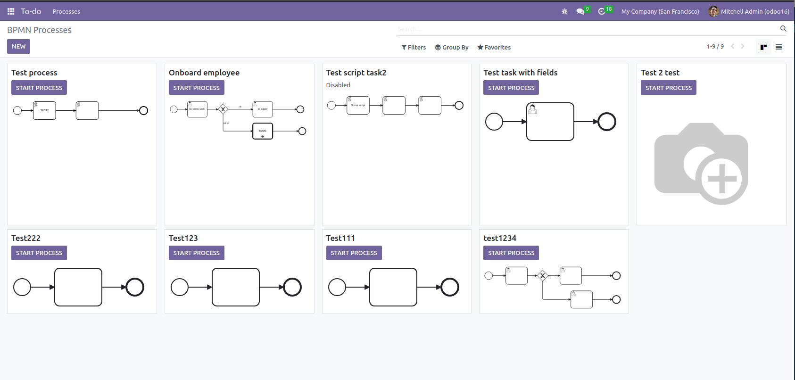
Setup BPM-managers
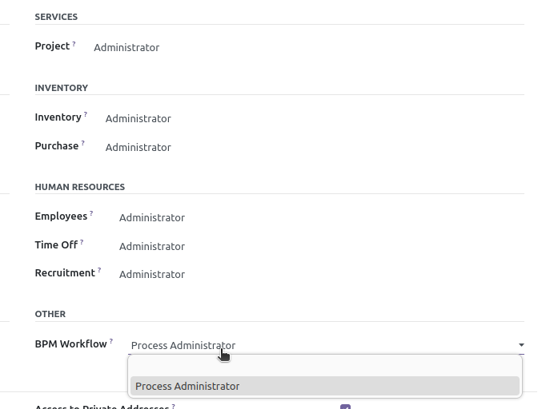
Internal users will have access for public processes.
Process modeler for BPM-managers
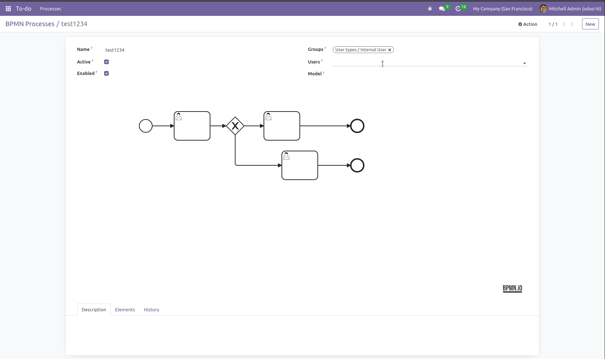
Create user tasks
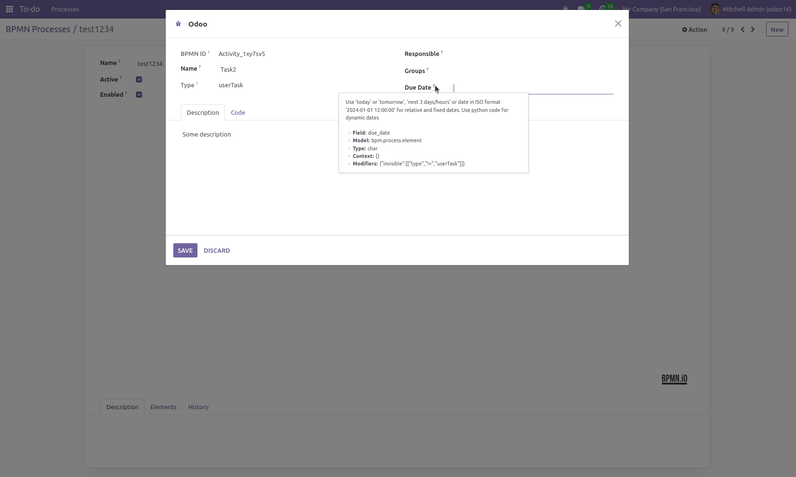
Execute some script after user task was created
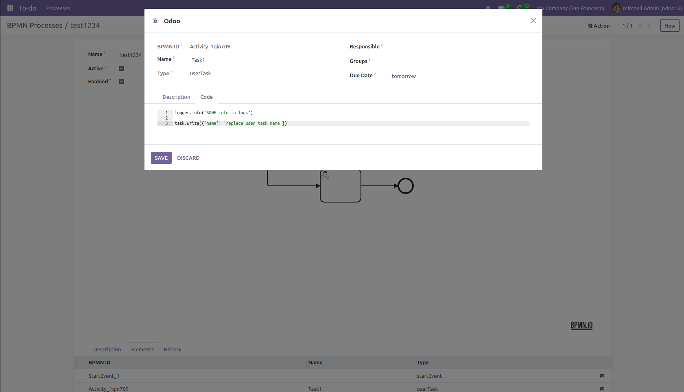
Execute some scripts in workflow
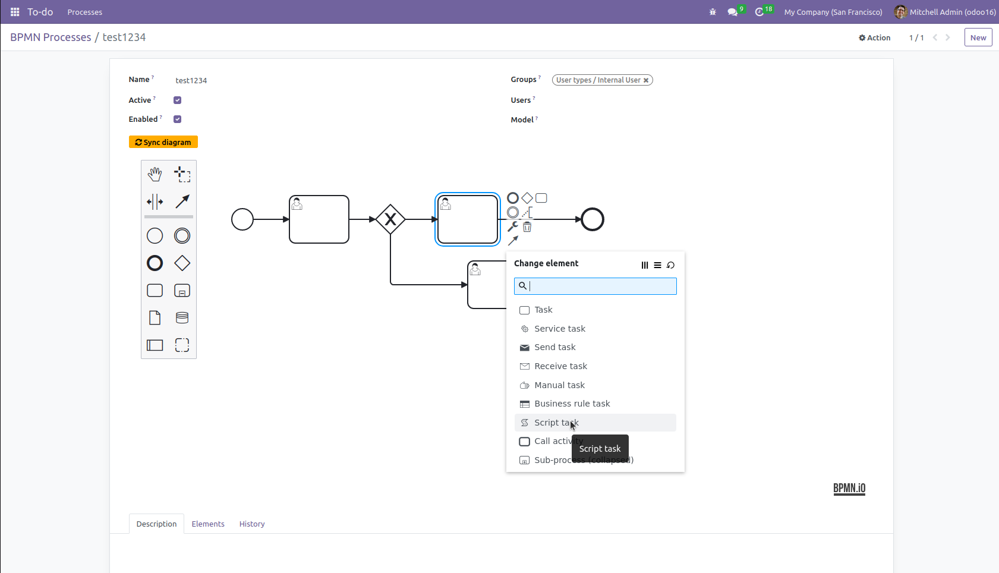
Many objects in context are already presented
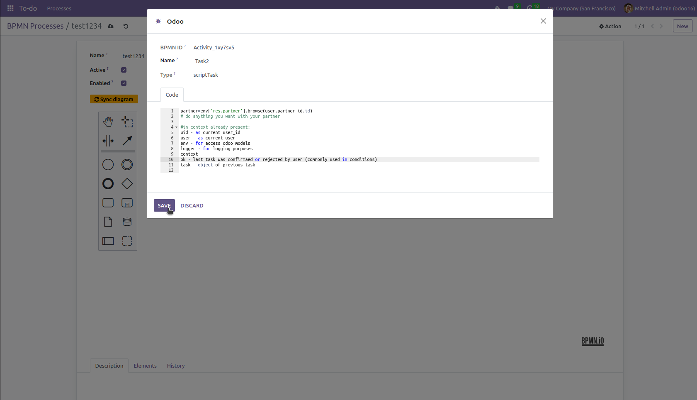
Make conditional flows
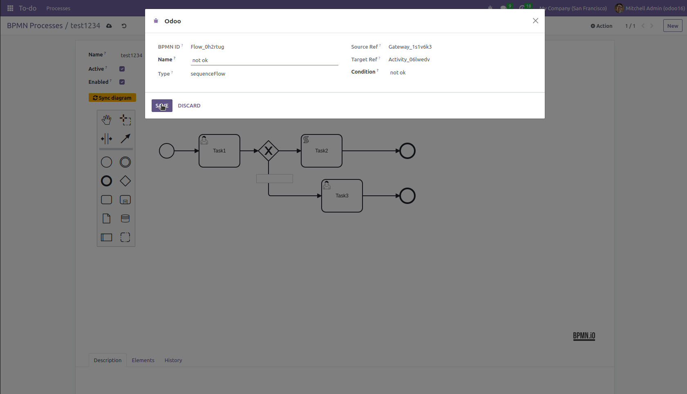
Make parallel flows without conditions
Start processes from kanban
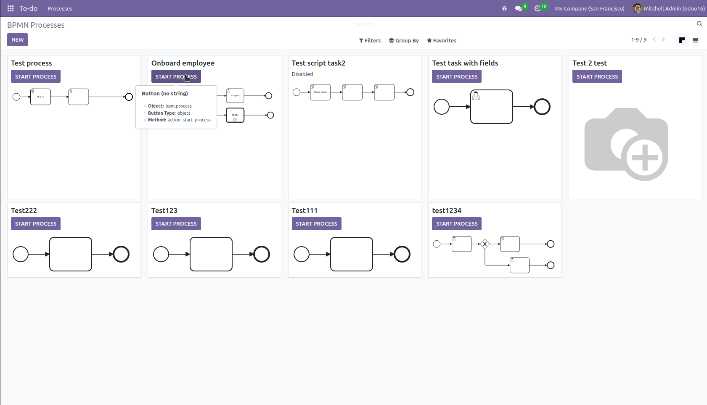
Start processes linked to the objects
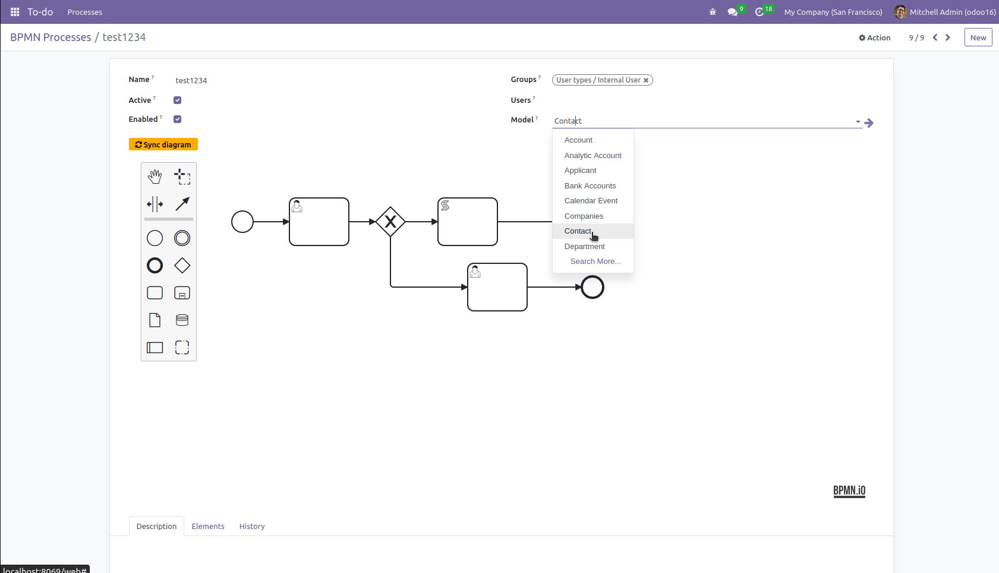
After linking processes to the model, you can start them from the model
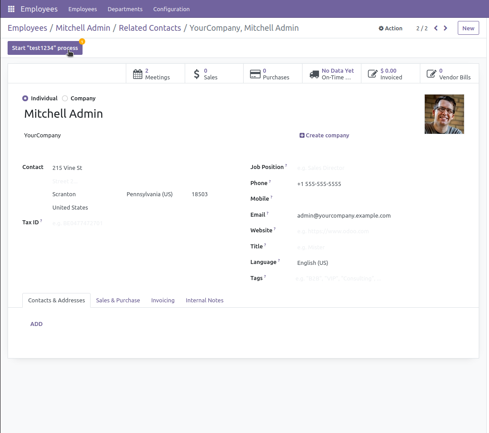
Use task confirmation or rejecting
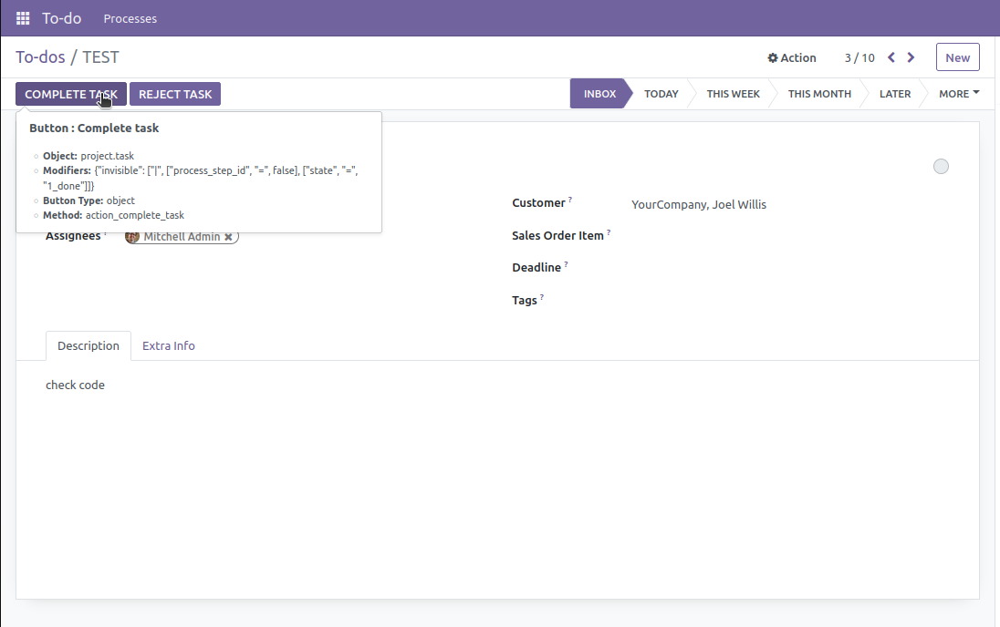
Inspect all supported BPMN elements
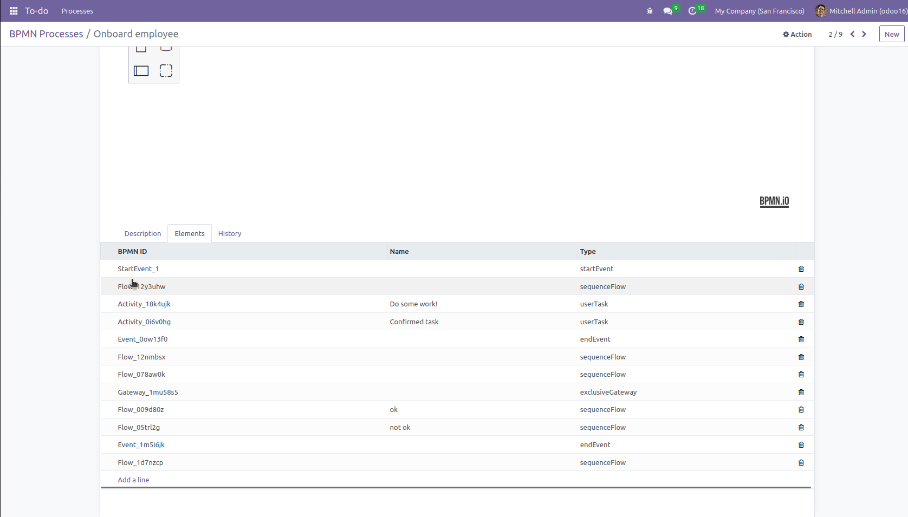
Supported elements
- Start event
- End event
- Exclusive gateway
- Parallel gateway
- Task
- UserTask
- ScriptTask
- Sequence flow
Will be supported in future elements
- ServiceTask
- MessageEvent
- SignalEvent
- TimerEvent
- BoundaryEvent
- IntermediateEvent
- SubProcess
- CallActivity
Check history of processes
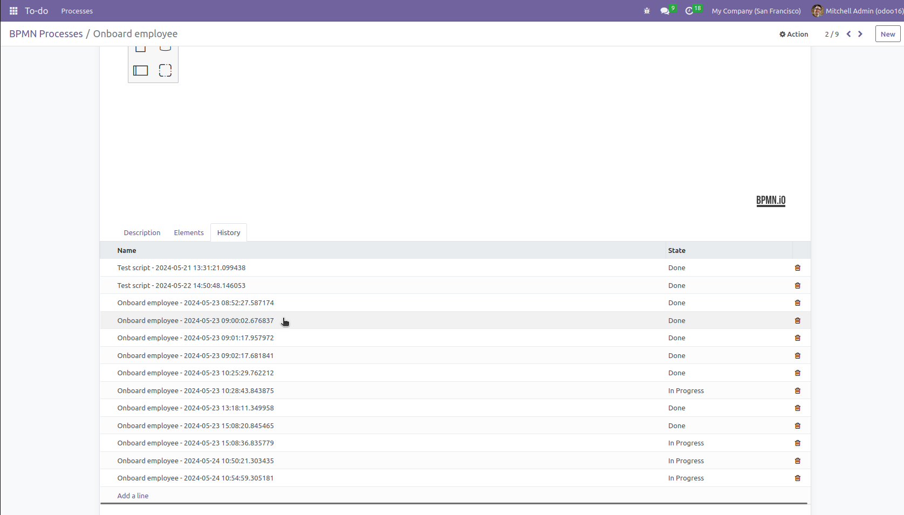
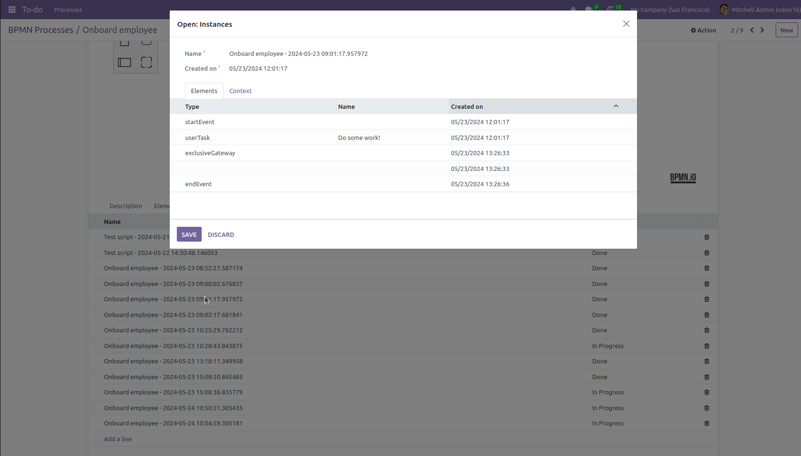